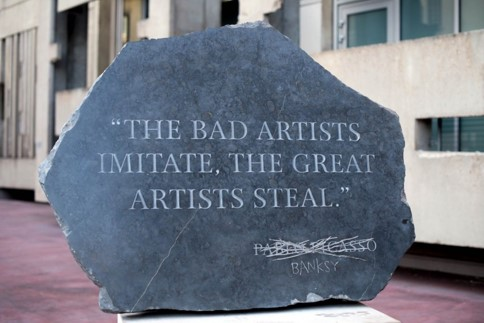
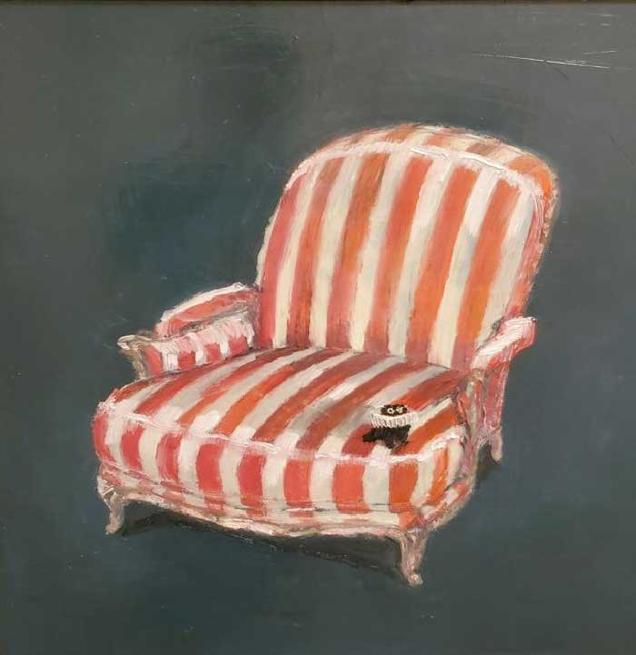
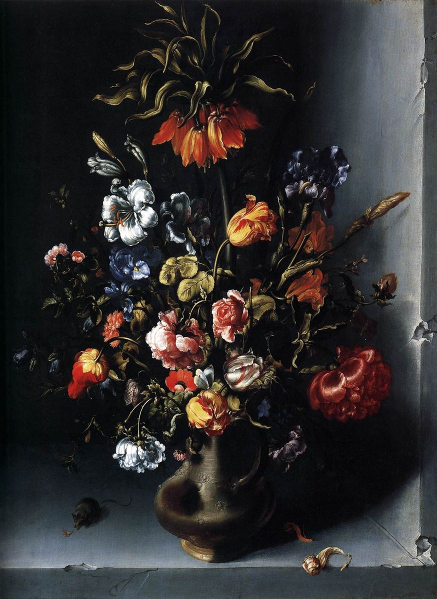

Home
welkom to my website! My name is Mariska and I make art.
about me
I have been making art for a long time as hobby. I started doing it more mostly because of my grandpa. My grandpa makes a lot of paintings and sculptures and as a child I often made art with him when i came over.
insperations
I get insperation from a few different things. First of is music. Secondly i get it from art I like. I also take inspiration from some subcultures like punk and steampunk.
Art/artists I like
-

Banksy is an artist I like. Banksy is an anonymous artist. I like his work because it usually has a very strong message behind it and i like the graffiti art style. The work in the picture is 'picasso quote'.
-

Vannessa Stockard is an artist I like. Vannessa was born October 31, 1975 in Sydney Austrelia. She is mainly known for her paintings with figures Kevin and Satan, two cats. The work in the picture is 'candy stripped Kevin'.
-

'Head of a Skeleton with a Burning Cigarette' is a painting I like. This painting was made by Vincent van Gogh in early 1886. I like this painting because of the strong dramatic contrasts and the accurate anatomy of the skeleton.
-

'Still-Life of Flowers with a Fritillary in a Stone Niche' is a painting I like. This painting was made by Jacob Woutersz Vosmaer around 1613. I like this painting because of the dramatic contrasts, vibrant colours and because the longer you look the more little details you see.